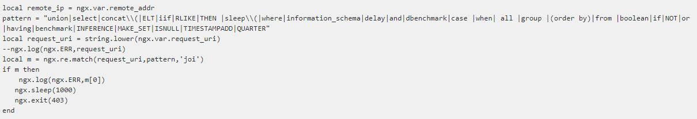
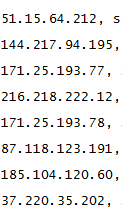
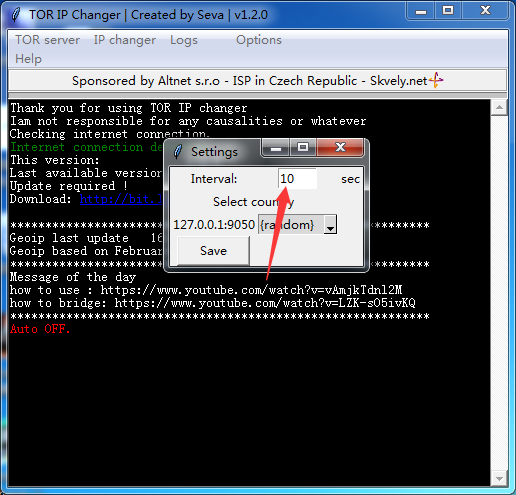
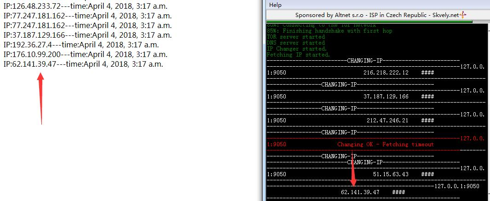

由于要对外网的网站进行渗透测试，但是大部分网站都有访问频率控制，一旦超过这个频率就直接禁IP。尤其是SQLMAP跑的时候，更是一片“姨妈红”，还没跑完SQLMAP就直接报错退出。
于是就开始研究SQLMAP的代理模式，SQLMAP有两种代理模式，一种是普通代理（HTTP代理），一种是tor代理。
我原本想写一下普通代理的应用，但是百度看到这篇文章已经够详细了，就不再说废话。Sqlmap扩展—外部IP代理池实现
还是重点谈谈tor代理，一开始直接使用tor去做注入时候，没有报“姨妈红”，后来随着渗透的网站的增多，发现tor还是存在报错的问题。于是在想是不是SQLMAP中tor的模块是不是不存在IP自动切换。
所以就写了一段代码测试，模拟当入侵检测系统检测到注入的时候，直接禁IP的情况，我这里使用延迟1000秒，sqlmap会报错。


使用sqlmap –tor –tor-type=”SOCKS5″进行注入，遗憾的是，tor的IP还是没有改变。
后来想到tor有不断切换IP的机制，猜测sqlmap不存在任何问题，问题应该在tor的配置身上，于是修改tor的配置文件torrc，位置C:\Users\Administrator\AppData\Roaming\tor
就只需加上一句话，一分钟切换一次IP。
MaxCircuitDirtiness 1
使用sqlmap跑了一下，发现IP都在不断切换

但是配置文件只能1分钟，我想需要在短时间内切换IP，于是我找到一个开源软件tor-ip-changer，下载地址

